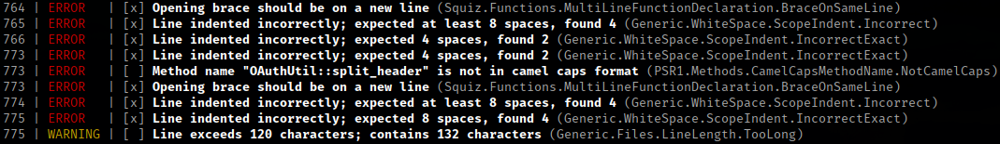

uma classe só pode ter uma única razão para mudar
class Report
{
public function fetch();
public function asHtml();
public function asJson();
}Especialize suas classes dividindo-as até que tenham somente um objetivo
class Report {
public function fetch();
}
class HtmlReportWriter {
public function export(Report $report);
}
class JsonReportWriter {
public function export(Report $report);
}entidades devem ser abertas para extensão mas fechadas para modificação
É possível implementar uma nova funcionalidade em seu sistema somente adicionando novas classes ao invés de modificar as existentes?
class ReportExporter {
public function toCsv(Report $report) {
$tempFile = $this->createNewFile();
$handler = fopen($tempFile, 'w');
foreach ($report as $row) {
fputcsv($handler, $row);
}
fclose($handler);
return $tempFile;
}
public function toXml(Report $report) { /* ... */ }
}Crie estruturas polimórficas.
Em PHP, utilize interfaces!
class ReportExporter {
public function export(Report $report, WriterInterface $writer) {
$writer->init();
foreach ($report as $row) {
$writer->write($row);
}
return $writer->finish();
}
}
interface WriterInterface {
public function init();
public function write($row);
public function finish();
}
class CsvWriter implements WriterInterface { }
class XmlWriter implements WriterInterface { }
// Em meu sistema, posso trocar o Writer sem medo!
$reportExporter->export($report, new CsvWriter());
$reportExporter->export($report, new XmlWriter());
objetos em um programa deveriam ser substituíveis por instâncias de seus subtipos sem alterar a exatidão do programa
Meu sistema precisa funcionar corretamente ao trocar o tipo do Writer
$writer = new CsvWriter();
$writer->write(/* ... */);
$writer = new FileWriter();
$writer->write(/* ... */);
Pré-condições não podem ser fortalecidas em uma subclasse
class DatabaseAdapter {
public function query(Statement $statement);
}
class MyPdoStatement extends Statement {
/* ... */
}
class PdoDatabaseAdapter extends DatabaseAdapter {
// Errado!
public function query(MyPdoStatement $statement);
}
Pós-condições não podem ser enfraquecidas em uma subclasse
class Retangulo {
public function setAltura($altura) {
$this->altura = $altura;
}
public function setLargura($largura) {
$this->largura = $largura;
}
}
class Quadrado extends Retangulo {
public function setAltura($altura) {
$this->altura = $altura;
$this->largura = $altura;
}
public function setLargura($largura) {
$this->altura = $largura;
$this->largura = $largura;
}
}
Herança não deve ser utilizada quando uma subclasse restringe a liberdade imposta na classe principal, mas sim quando adiciona mais detalhes.
Ela só é necessária quando há similaridade de comportamento. Senão, use composição.
é preferível ter várias interfaces mais específicas do que uma genérica
interface ConfigInterface {
public function get($property);
public function set($property, $value);
}Mas toda configuração pode ser modificável?
class ReadonlyConfig implements ConfigInterface {
public function __construct(array $data) {
$this->data = $data;
}
public function get($property) {
return $this->data[$property];
}
public function set($property, $value) {
throw new BadMethodCallException('Não é possível modificar valores em tempo de execução');
}
}Segrege suas interfaces ao invés de criar uma que atenda todos os casos
interface ConfigInterface {
public function get($property);
}
interface WritableConfigInterface {
public function get($property);
public function set($property, $value);
}dependa de abstrações (interfaces) ao invés de classes concretas
PSR-15
php-fig.org/psr/psr-15
namespace Interop\Http\Server;
use Psr\Http\Message\ResponseInterface;
use Psr\Http\Message\ServerRequestInterface;
interface RequestHandlerInterface {
public function handle(
ServerRequestInterface $request
): ResponseInterface;
}Isso facilita muito para fazer testes!
class UserRepository {
public function __construct(Adapter $adapter) {
/* ... */
}
public function create(User $user) {
$this->adapter->insert('users', /* ... */);
}
}class UserRepositoryTest {
public function __construct() {
$this->adapter = new Adapter();
// É preciso sempre limpar a base antes de começar
$this->adapter->delete('users');
}
public function run() {
$repository = new UserRepository($this->adapter);
$repository->save(new User());
}
}class UserRepository {
public function __construct(AdapterInterface $adapter) {
/* ... */
}
public function create(User $user) {
$this->adapter->insert('users', /* ... */);
}
}interface AdapterInterface {
public function insert($table, array $data);
}
class RealAdapter extends AdapterInterface {
public function insert($table, array $data) {
return $this->pdo->exec('INSERT ...');
}
}
class TestsAdapter extends AdapterInterface {
public function insert($table, array $data) {
return true;
}
}
public function minifiy(array $files) {
foreach ($files as $file) {
if (!is_file($file)) {
throw new RuntimeException("{$file} não é válido");
}
switch (pathinfo($file, PATHINFO_EXTENSION)) {
case 'js':
// ...
break;
case 'html':
// ...
break;
case 'css':
// ...
break;
}
}
}public function minifiy(array $files) {
foreach ($files as $file) {
$this->parseFile($file);
}
}
protected function parseFile($file) {
if (!is_file($file)) {
throw new RuntimeException("{$file} não é válido");
}
$this->getParserForExtension(pathinfo($file, PATHINFO_EXTENSION))
->parse($file);
}
protected function getParserForExtension($extension) {
if (isset($this->parsersByExtension[$extension])) {
return $this->parsersByExtension[$extension];
}
throw new DomainException("Nenhum minificador para {$extension} foi encontrado");
}
public function login($username, $password) {
$row = $this->dbh->fetch('SELECT * FROM user WHERE username = ?', $username);
if (!empty($row)) {
if ($row['active']) {
if (password_verify($password, $row['password'])) {
$_SESSION['loggedIn'] = true;
header('Location: /dashboard.php');
return true;
} else {
header('Location: /login.php?error=invalid');
}
} else {
header('Location: /login.php?error=inactive');
}
} else {
$attempts = $this->dbh->fetch('SELECT attempts FROM login_attempts WHERE username = ?', $username);
if ($attempts >= self::MAX_LOGIN_ATTEMTPS) {
$this->dbh->query('UPDATE login_attempts SET attempts = attempts + 1 WHERE username = ?', $username);
header('Location: /login.php?error=blocked');
} else {
header('Location: /login.php?error=invalid');
}
}
return false;
}“Early return”
public function login($username, $password) {
$user = $this->repository->findByUsername($username);
if (empty($user)) {
$this->checkLoginAttempts($user);
return false;
}
return $this->checkUser($user);
}
protected function checkUser(User $user) {
if (!$user->active) {
header('Location: /login.php?error=inactive');
return false;
}
if (!password_verify($password, $user->password)) {
header('Location: /login.php?error=invalid');
return false;
}
$this->doLogin($user);
retun true;
}
protected function doLogin(User $user) {
$_SESSION['loggedIn'] = true;
header('Location: /dashboard.php');
}
protected function checkLoginAttempts(User $user) {
$attempts = $this->repository->touchLoginAttemptsByUser($user);
if ($attempts >= self::MAX_LOGIN_ATTEMTPS) {
header('Location: /login.php?error=blocked');
return;
}
header('Location: /login.php?error=invalid');
}Se você precisa passar por diversos objetos para chamar um método, significa que você precisa saber muito sobre como eles funcionam
if ($this->getRequest()->getHeaders()->getAccept()->isJson()) {
header('Content-type: application/json');
return json_encode($response);
}“Law of Demeter” e “Tell, Don't Ask”
if ($this->getRequest()->needsJson()) {
header('Content-type: application/json');
return json_encode($response);
}Verifica violações do código de acordo com um conjunto de regras
Automaticamente corrige algumas violações no código
Equivalente à ferramenta PMD do Java, analisa código para detectar diversas anomalias, como:
Complexidade determinada de acordo com o número de pontos de decisão (if, while, for e case) + 1
public function login($username, $password) { // 1
$row = $this->dbh->fetch('SELECT * FROM user WHERE username = ?', $username);
if (!empty($row)) { // 2
if ($row['active']) { // 3
if (password_verify($password, $row['password'])) { // 4
$_SESSION['loggedIn'] = true;
header('Location: /dashboard.php');
return true;
} else {
header('Location: /login.php?error=invalid');
}
} else {
header('Location: /login.php?error=inactive');
}
} else {
$attempts = $this->dbh->fetch('SELECT attempts FROM login_attempts WHERE username = ?', $username);
if ($attempts >= self::MAX_LOGIN_ATTEMTPS) { // 5
$this->dbh->query('UPDATE login_attempts SET attempts = attempts + 1 WHERE username = ?', $username);
header('Location: /login.php?error=blocked');
} else {
header('Location: /login.php?error=invalid');
}
}
return false;
}Graus de Complexidade
1-4 — baixa 5-7 — moderada8-10 — alta 11+ — muito alta